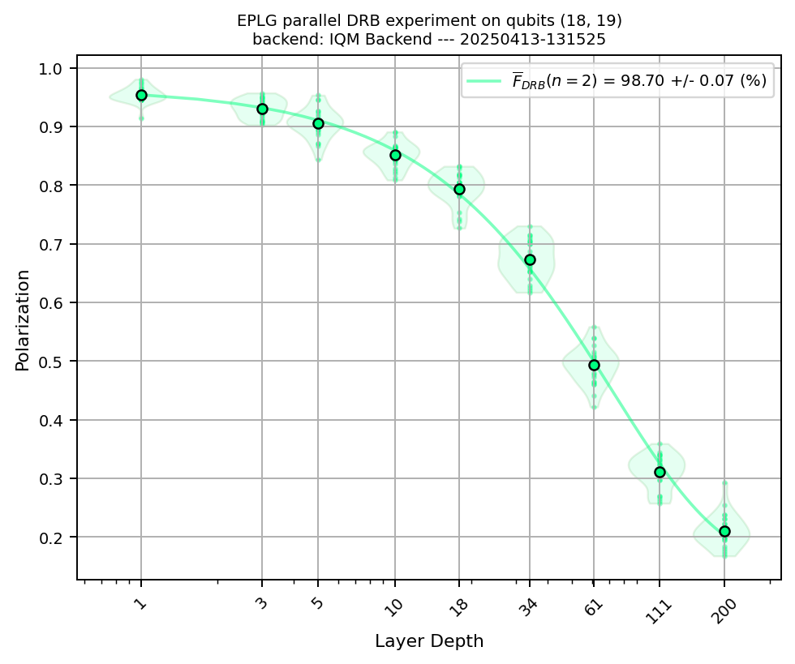

Error Per Layered Gate (EPLG)#
%load_ext autoreload
%autoreload 2
Set IQM Token if using Resonance.#
import os
os.environ["IQM_TOKEN"] = "xxxxxxxxxxxxxxxxxxxxxx"
Choose (or define) a backend#
In order to be able to use calibration fidelities as a proxy for selecting a linear chain, we need to specify the calibration URL of the station. If specifying qubit pairs manually (not necessarily forming a linear chain), this is not needed: you can simply pass the backend as a string name.
# To use calibration fidelities to (automatically) select a linear chain, use the following:
from iqm.qiskit_iqm.iqm_provider import IQMProvider
resonance_station="garnet"
iqm_url=f"https://cocos.resonance.meetiqm.com/{resonance_station}"
cal_url=f"https://api.resonance.meetiqm.com/quantum-computers/v1/{resonance_station}/calibrations"
provider = IQMProvider(iqm_url)
backend = provider.get_backend()
# If manually specifying qubit pairs, you can also simply use the following:
#backend="fakeapollo"
Randomized Benchmarking Configuration#
from iqm.benchmarks.randomized_benchmarking.eplg.eplg import *
import numpy as np
EXAMPLE_EPLG = EPLGConfiguration(
custom_qubits_array=list(backend.coupling_map),
drb_depths=sorted(list(set(np.geomspace(1, 200, num=10, endpoint=True, dtype=int).tolist())), reverse=True),
drb_circuit_samples=25,
shots=2**8,
# Parameters for a linear chain layer:
# chain_length=30,
# chain_path_samples=200,
# num_disjoint_layers=4,
# max_hamiltonian_path_tries=100,
# calibration_url=cal_url,
)
Run the experiment#
benchmark_eplg = EPLGBenchmark(backend, EXAMPLE_EPLG)
run_eplg = benchmark_eplg.run()
2025-04-13 13:15:25,358 - iqm.benchmarks.logging_config - INFO - Using specified custom_qubits_array: will split into 4 disjoint layers.
2025-04-13 13:15:28,742 - iqm.benchmarks.logging_config - INFO - Clifford dictionaries for both 1 & 2 qubits imported successfully!
2025-04-13 13:15:28,745 - iqm.benchmarks.logging_config - INFO - Executing parallel Direct RB on qubits [(1, 0), (3, 2), (5, 4), (7, 8), (9, 10), (11, 6), (13, 12), (15, 14), (18, 17)] (group 1/4). Will generate and submit all 25 DRB circuits for each depth [200, 111, 61, 34, 18, 10, 5, 3, 1]
2025-04-13 13:15:28,748 - iqm.benchmarks.logging_config - INFO - Depth 200
2025-04-13 13:17:14,267 - iqm.benchmarks.logging_config - INFO - Submitting batch with 25 circuits corresponding to qubits [1, 0, 3, 2, 5, 4, 7, 8, 9, 10, 11, 6, 13, 12, 15, 14, 18, 17]
C:\Users\PedroFigueroaRomero\anaconda3\envs\iqm-bench\Lib\site-packages\iqm\qiskit_iqm\iqm_provider.py:177: UserWarning: Unknown backend option(s): {'calibration_set_id': None}
warnings.warn(f'Unknown backend option(s): {unknown_options}')
2025-04-13 13:17:56,569 - iqm.benchmarks.logging_config - INFO - Job for depth 200 submitted successfully!
2025-04-13 13:17:56,571 - iqm.benchmarks.logging_config - INFO - Depth 111
2025-04-13 13:18:18,227 - iqm.benchmarks.logging_config - INFO - Submitting batch with 25 circuits corresponding to qubits [1, 0, 3, 2, 5, 4, 7, 8, 9, 10, 11, 6, 13, 12, 15, 14, 18, 17]
2025-04-13 13:18:28,523 - iqm.benchmarks.logging_config - INFO - Job for depth 111 submitted successfully!
2025-04-13 13:18:28,539 - iqm.benchmarks.logging_config - INFO - Depth 61
2025-04-13 13:18:40,580 - iqm.benchmarks.logging_config - INFO - Submitting batch with 25 circuits corresponding to qubits [1, 0, 3, 2, 5, 4, 7, 8, 9, 10, 11, 6, 13, 12, 15, 14, 18, 17]
2025-04-13 13:18:46,333 - iqm.benchmarks.logging_config - INFO - Job for depth 61 submitted successfully!
2025-04-13 13:18:46,333 - iqm.benchmarks.logging_config - INFO - Depth 34
2025-04-13 13:18:52,692 - iqm.benchmarks.logging_config - INFO - Submitting batch with 25 circuits corresponding to qubits [1, 0, 3, 2, 5, 4, 7, 8, 9, 10, 11, 6, 13, 12, 15, 14, 18, 17]
2025-04-13 13:18:57,059 - iqm.benchmarks.logging_config - INFO - Job for depth 34 submitted successfully!
2025-04-13 13:18:57,059 - iqm.benchmarks.logging_config - INFO - Depth 18
2025-04-13 13:19:00,816 - iqm.benchmarks.logging_config - INFO - Submitting batch with 25 circuits corresponding to qubits [1, 0, 3, 2, 5, 4, 7, 8, 9, 10, 11, 6, 13, 12, 15, 14, 18, 17]
2025-04-13 13:19:03,812 - iqm.benchmarks.logging_config - INFO - Job for depth 18 submitted successfully!
2025-04-13 13:19:03,812 - iqm.benchmarks.logging_config - INFO - Depth 10
2025-04-13 13:19:06,057 - iqm.benchmarks.logging_config - INFO - Submitting batch with 25 circuits corresponding to qubits [1, 0, 3, 2, 5, 4, 7, 8, 9, 10, 11, 6, 13, 12, 15, 14, 18, 17]
2025-04-13 13:19:07,672 - iqm.benchmarks.logging_config - INFO - Job for depth 10 submitted successfully!
2025-04-13 13:19:07,672 - iqm.benchmarks.logging_config - INFO - Depth 5
2025-04-13 13:19:08,826 - iqm.benchmarks.logging_config - INFO - Submitting batch with 25 circuits corresponding to qubits [1, 0, 3, 2, 5, 4, 7, 8, 9, 10, 11, 6, 13, 12, 15, 14, 18, 17]
2025-04-13 13:19:10,097 - iqm.benchmarks.logging_config - INFO - Job for depth 5 submitted successfully!
2025-04-13 13:19:10,112 - iqm.benchmarks.logging_config - INFO - Depth 3
2025-04-13 13:19:11,454 - iqm.benchmarks.logging_config - INFO - Submitting batch with 25 circuits corresponding to qubits [1, 0, 3, 2, 5, 4, 7, 8, 9, 10, 11, 6, 13, 12, 15, 14, 18, 17]
2025-04-13 13:19:12,888 - iqm.benchmarks.logging_config - INFO - Job for depth 3 submitted successfully!
2025-04-13 13:19:12,888 - iqm.benchmarks.logging_config - INFO - Depth 1
2025-04-13 13:19:13,556 - iqm.benchmarks.logging_config - INFO - Submitting batch with 25 circuits corresponding to qubits [1, 0, 3, 2, 5, 4, 7, 8, 9, 10, 11, 6, 13, 12, 15, 14, 18, 17]
2025-04-13 13:19:14,537 - iqm.benchmarks.logging_config - INFO - Job for depth 1 submitted successfully!
2025-04-13 13:19:14,537 - iqm.benchmarks.logging_config - INFO - Executing parallel Direct RB on qubits [(1, 4), (3, 0), (5, 6), (7, 2), (9, 8), (11, 10), (13, 14), (15, 16), (18, 19)] (group 2/4). Will generate and submit all 25 DRB circuits for each depth [200, 111, 61, 34, 18, 10, 5, 3, 1]
2025-04-13 13:19:14,547 - iqm.benchmarks.logging_config - INFO - Depth 200
2025-04-13 13:20:05,054 - iqm.benchmarks.logging_config - INFO - Submitting batch with 25 circuits corresponding to qubits [1, 4, 3, 0, 5, 6, 7, 2, 9, 8, 11, 10, 13, 14, 15, 16, 18, 19]
2025-04-13 13:20:26,805 - iqm.benchmarks.logging_config - INFO - Job for depth 200 submitted successfully!
2025-04-13 13:20:26,805 - iqm.benchmarks.logging_config - INFO - Depth 111
2025-04-13 13:20:51,921 - iqm.benchmarks.logging_config - INFO - Submitting batch with 25 circuits corresponding to qubits [1, 4, 3, 0, 5, 6, 7, 2, 9, 8, 11, 10, 13, 14, 15, 16, 18, 19]
2025-04-13 13:21:04,066 - iqm.benchmarks.logging_config - INFO - Job for depth 111 submitted successfully!
2025-04-13 13:21:04,066 - iqm.benchmarks.logging_config - INFO - Depth 61
2025-04-13 13:21:18,899 - iqm.benchmarks.logging_config - INFO - Submitting batch with 25 circuits corresponding to qubits [1, 4, 3, 0, 5, 6, 7, 2, 9, 8, 11, 10, 13, 14, 15, 16, 18, 19]
2025-04-13 13:21:25,649 - iqm.benchmarks.logging_config - INFO - Job for depth 61 submitted successfully!
2025-04-13 13:21:25,649 - iqm.benchmarks.logging_config - INFO - Depth 34
2025-04-13 13:21:33,101 - iqm.benchmarks.logging_config - INFO - Submitting batch with 25 circuits corresponding to qubits [1, 4, 3, 0, 5, 6, 7, 2, 9, 8, 11, 10, 13, 14, 15, 16, 18, 19]
2025-04-13 13:21:37,712 - iqm.benchmarks.logging_config - INFO - Job for depth 34 submitted successfully!
2025-04-13 13:21:37,712 - iqm.benchmarks.logging_config - INFO - Depth 18
2025-04-13 13:21:41,280 - iqm.benchmarks.logging_config - INFO - Submitting batch with 25 circuits corresponding to qubits [1, 4, 3, 0, 5, 6, 7, 2, 9, 8, 11, 10, 13, 14, 15, 16, 18, 19]
2025-04-13 13:21:44,252 - iqm.benchmarks.logging_config - INFO - Job for depth 18 submitted successfully!
2025-04-13 13:21:44,252 - iqm.benchmarks.logging_config - INFO - Depth 10
2025-04-13 13:21:46,704 - iqm.benchmarks.logging_config - INFO - Submitting batch with 25 circuits corresponding to qubits [1, 4, 3, 0, 5, 6, 7, 2, 9, 8, 11, 10, 13, 14, 15, 16, 18, 19]
2025-04-13 13:21:48,536 - iqm.benchmarks.logging_config - INFO - Job for depth 10 submitted successfully!
2025-04-13 13:21:48,536 - iqm.benchmarks.logging_config - INFO - Depth 5
2025-04-13 13:21:49,689 - iqm.benchmarks.logging_config - INFO - Submitting batch with 25 circuits corresponding to qubits [1, 4, 3, 0, 5, 6, 7, 2, 9, 8, 11, 10, 13, 14, 15, 16, 18, 19]
2025-04-13 13:21:51,204 - iqm.benchmarks.logging_config - INFO - Job for depth 5 submitted successfully!
2025-04-13 13:21:51,204 - iqm.benchmarks.logging_config - INFO - Depth 3
2025-04-13 13:21:52,112 - iqm.benchmarks.logging_config - INFO - Submitting batch with 25 circuits corresponding to qubits [1, 4, 3, 0, 5, 6, 7, 2, 9, 8, 11, 10, 13, 14, 15, 16, 18, 19]
2025-04-13 13:21:53,802 - iqm.benchmarks.logging_config - INFO - Job for depth 3 submitted successfully!
2025-04-13 13:21:53,802 - iqm.benchmarks.logging_config - INFO - Depth 1
2025-04-13 13:21:54,303 - iqm.benchmarks.logging_config - INFO - Submitting batch with 25 circuits corresponding to qubits [1, 4, 3, 0, 5, 6, 7, 2, 9, 8, 11, 10, 13, 14, 15, 16, 18, 19]
2025-04-13 13:21:55,205 - iqm.benchmarks.logging_config - INFO - Job for depth 1 submitted successfully!
2025-04-13 13:21:55,205 - iqm.benchmarks.logging_config - INFO - Executing parallel Direct RB on qubits [(3, 4), (5, 10), (7, 12), (9, 14), (11, 16), (13, 8), (15, 19)] (group 3/4). Will generate and submit all 25 DRB circuits for each depth [200, 111, 61, 34, 18, 10, 5, 3, 1]
2025-04-13 13:21:55,205 - iqm.benchmarks.logging_config - INFO - Depth 200
2025-04-13 13:22:32,813 - iqm.benchmarks.logging_config - INFO - Submitting batch with 25 circuits corresponding to qubits [3, 4, 5, 10, 7, 12, 9, 14, 11, 16, 13, 8, 15, 19]
2025-04-13 13:22:51,511 - iqm.benchmarks.logging_config - INFO - Job for depth 200 submitted successfully!
2025-04-13 13:22:51,511 - iqm.benchmarks.logging_config - INFO - Depth 111
2025-04-13 13:23:21,224 - iqm.benchmarks.logging_config - INFO - Submitting batch with 25 circuits corresponding to qubits [3, 4, 5, 10, 7, 12, 9, 14, 11, 16, 13, 8, 15, 19]
2025-04-13 13:23:33,136 - iqm.benchmarks.logging_config - INFO - Job for depth 111 submitted successfully!
2025-04-13 13:23:33,136 - iqm.benchmarks.logging_config - INFO - Depth 61
2025-04-13 13:23:44,164 - iqm.benchmarks.logging_config - INFO - Submitting batch with 25 circuits corresponding to qubits [3, 4, 5, 10, 7, 12, 9, 14, 11, 16, 13, 8, 15, 19]
2025-04-13 13:23:50,236 - iqm.benchmarks.logging_config - INFO - Job for depth 61 submitted successfully!
2025-04-13 13:23:50,236 - iqm.benchmarks.logging_config - INFO - Depth 34
2025-04-13 13:23:55,920 - iqm.benchmarks.logging_config - INFO - Submitting batch with 25 circuits corresponding to qubits [3, 4, 5, 10, 7, 12, 9, 14, 11, 16, 13, 8, 15, 19]
2025-04-13 13:23:59,124 - iqm.benchmarks.logging_config - INFO - Job for depth 34 submitted successfully!
2025-04-13 13:23:59,126 - iqm.benchmarks.logging_config - INFO - Depth 18
2025-04-13 13:24:02,019 - iqm.benchmarks.logging_config - INFO - Submitting batch with 25 circuits corresponding to qubits [3, 4, 5, 10, 7, 12, 9, 14, 11, 16, 13, 8, 15, 19]
2025-04-13 13:24:04,833 - iqm.benchmarks.logging_config - INFO - Job for depth 18 submitted successfully!
2025-04-13 13:24:04,833 - iqm.benchmarks.logging_config - INFO - Depth 10
2025-04-13 13:24:06,724 - iqm.benchmarks.logging_config - INFO - Submitting batch with 25 circuits corresponding to qubits [3, 4, 5, 10, 7, 12, 9, 14, 11, 16, 13, 8, 15, 19]
2025-04-13 13:24:08,631 - iqm.benchmarks.logging_config - INFO - Job for depth 10 submitted successfully!
2025-04-13 13:24:08,631 - iqm.benchmarks.logging_config - INFO - Depth 5
2025-04-13 13:24:09,861 - iqm.benchmarks.logging_config - INFO - Submitting batch with 25 circuits corresponding to qubits [3, 4, 5, 10, 7, 12, 9, 14, 11, 16, 13, 8, 15, 19]
2025-04-13 13:24:10,955 - iqm.benchmarks.logging_config - INFO - Job for depth 5 submitted successfully!
2025-04-13 13:24:10,955 - iqm.benchmarks.logging_config - INFO - Depth 3
2025-04-13 13:24:11,658 - iqm.benchmarks.logging_config - INFO - Submitting batch with 25 circuits corresponding to qubits [3, 4, 5, 10, 7, 12, 9, 14, 11, 16, 13, 8, 15, 19]
2025-04-13 13:24:12,819 - iqm.benchmarks.logging_config - INFO - Job for depth 3 submitted successfully!
2025-04-13 13:24:12,819 - iqm.benchmarks.logging_config - INFO - Depth 1
2025-04-13 13:24:13,161 - iqm.benchmarks.logging_config - INFO - Submitting batch with 25 circuits corresponding to qubits [3, 4, 5, 10, 7, 12, 9, 14, 11, 16, 13, 8, 15, 19]
2025-04-13 13:24:14,033 - iqm.benchmarks.logging_config - INFO - Job for depth 1 submitted successfully!
2025-04-13 13:24:14,048 - iqm.benchmarks.logging_config - INFO - Executing parallel Direct RB on qubits [(3, 8), (9, 4), (13, 17), (15, 10), (18, 14)] (group 4/4). Will generate and submit all 25 DRB circuits for each depth [200, 111, 61, 34, 18, 10, 5, 3, 1]
2025-04-13 13:24:14,050 - iqm.benchmarks.logging_config - INFO - Depth 200
2025-04-13 13:24:42,357 - iqm.benchmarks.logging_config - INFO - Submitting batch with 25 circuits corresponding to qubits [3, 8, 9, 4, 13, 17, 15, 10, 18, 14]
2025-04-13 13:24:55,785 - iqm.benchmarks.logging_config - INFO - Job for depth 200 submitted successfully!
2025-04-13 13:24:55,785 - iqm.benchmarks.logging_config - INFO - Depth 111
2025-04-13 13:25:08,236 - iqm.benchmarks.logging_config - INFO - Submitting batch with 25 circuits corresponding to qubits [3, 8, 9, 4, 13, 17, 15, 10, 18, 14]
2025-04-13 13:25:15,147 - iqm.benchmarks.logging_config - INFO - Job for depth 111 submitted successfully!
2025-04-13 13:25:15,147 - iqm.benchmarks.logging_config - INFO - Depth 61
2025-04-13 13:25:21,289 - iqm.benchmarks.logging_config - INFO - Submitting batch with 25 circuits corresponding to qubits [3, 8, 9, 4, 13, 17, 15, 10, 18, 14]
2025-04-13 13:25:25,253 - iqm.benchmarks.logging_config - INFO - Job for depth 61 submitted successfully!
2025-04-13 13:25:25,253 - iqm.benchmarks.logging_config - INFO - Depth 34
2025-04-13 13:25:30,567 - iqm.benchmarks.logging_config - INFO - Submitting batch with 25 circuits corresponding to qubits [3, 8, 9, 4, 13, 17, 15, 10, 18, 14]
2025-04-13 13:25:32,914 - iqm.benchmarks.logging_config - INFO - Job for depth 34 submitted successfully!
2025-04-13 13:25:32,914 - iqm.benchmarks.logging_config - INFO - Depth 18
2025-04-13 13:25:34,694 - iqm.benchmarks.logging_config - INFO - Submitting batch with 25 circuits corresponding to qubits [3, 8, 9, 4, 13, 17, 15, 10, 18, 14]
2025-04-13 13:25:36,282 - iqm.benchmarks.logging_config - INFO - Job for depth 18 submitted successfully!
2025-04-13 13:25:36,282 - iqm.benchmarks.logging_config - INFO - Depth 10
2025-04-13 13:25:37,408 - iqm.benchmarks.logging_config - INFO - Submitting batch with 25 circuits corresponding to qubits [3, 8, 9, 4, 13, 17, 15, 10, 18, 14]
2025-04-13 13:25:38,721 - iqm.benchmarks.logging_config - INFO - Job for depth 10 submitted successfully!
2025-04-13 13:25:38,738 - iqm.benchmarks.logging_config - INFO - Depth 5
2025-04-13 13:25:40,298 - iqm.benchmarks.logging_config - INFO - Submitting batch with 25 circuits corresponding to qubits [3, 8, 9, 4, 13, 17, 15, 10, 18, 14]
2025-04-13 13:25:41,395 - iqm.benchmarks.logging_config - INFO - Job for depth 5 submitted successfully!
2025-04-13 13:25:41,395 - iqm.benchmarks.logging_config - INFO - Depth 3
2025-04-13 13:25:41,913 - iqm.benchmarks.logging_config - INFO - Submitting batch with 25 circuits corresponding to qubits [3, 8, 9, 4, 13, 17, 15, 10, 18, 14]
2025-04-13 13:25:42,828 - iqm.benchmarks.logging_config - INFO - Job for depth 3 submitted successfully!
2025-04-13 13:25:42,830 - iqm.benchmarks.logging_config - INFO - Depth 1
2025-04-13 13:25:43,129 - iqm.benchmarks.logging_config - INFO - Submitting batch with 25 circuits corresponding to qubits [3, 8, 9, 4, 13, 17, 15, 10, 18, 14]
2025-04-13 13:25:43,852 - iqm.benchmarks.logging_config - INFO - Job for depth 1 submitted successfully!
2025-04-13 13:25:43,852 - iqm.benchmarks.logging_config - INFO - Retrieving all counts for qubits_[(1, 0), (3, 2), (5, 4), (7, 8), (9, 10), (11, 6), (13, 12), (15, 14), (18, 17)]_depth_200
2025-04-13 13:25:51,914 - iqm.benchmarks.logging_config - INFO - Adding counts of qubits [(1, 0), (3, 2), (5, 4), (7, 8), (9, 10), (11, 6), (13, 12), (15, 14), (18, 17)] and depth 200 run to the dataset
2025-04-13 13:25:52,307 - iqm.benchmarks.logging_config - INFO - Retrieving all counts for qubits_[(1, 0), (3, 2), (5, 4), (7, 8), (9, 10), (11, 6), (13, 12), (15, 14), (18, 17)]_depth_111
2025-04-13 13:25:58,471 - iqm.benchmarks.logging_config - INFO - Adding counts of qubits [(1, 0), (3, 2), (5, 4), (7, 8), (9, 10), (11, 6), (13, 12), (15, 14), (18, 17)] and depth 111 run to the dataset
2025-04-13 13:25:58,900 - iqm.benchmarks.logging_config - INFO - Retrieving all counts for qubits_[(1, 0), (3, 2), (5, 4), (7, 8), (9, 10), (11, 6), (13, 12), (15, 14), (18, 17)]_depth_61
2025-04-13 13:26:02,525 - iqm.benchmarks.logging_config - INFO - Adding counts of qubits [(1, 0), (3, 2), (5, 4), (7, 8), (9, 10), (11, 6), (13, 12), (15, 14), (18, 17)] and depth 61 run to the dataset
2025-04-13 13:26:03,067 - iqm.benchmarks.logging_config - INFO - Retrieving all counts for qubits_[(1, 0), (3, 2), (5, 4), (7, 8), (9, 10), (11, 6), (13, 12), (15, 14), (18, 17)]_depth_34
2025-04-13 13:26:04,832 - iqm.benchmarks.logging_config - INFO - Adding counts of qubits [(1, 0), (3, 2), (5, 4), (7, 8), (9, 10), (11, 6), (13, 12), (15, 14), (18, 17)] and depth 34 run to the dataset
2025-04-13 13:26:05,255 - iqm.benchmarks.logging_config - INFO - Retrieving all counts for qubits_[(1, 0), (3, 2), (5, 4), (7, 8), (9, 10), (11, 6), (13, 12), (15, 14), (18, 17)]_depth_18
2025-04-13 13:26:07,851 - iqm.benchmarks.logging_config - INFO - Adding counts of qubits [(1, 0), (3, 2), (5, 4), (7, 8), (9, 10), (11, 6), (13, 12), (15, 14), (18, 17)] and depth 18 run to the dataset
2025-04-13 13:26:08,246 - iqm.benchmarks.logging_config - INFO - Retrieving all counts for qubits_[(1, 0), (3, 2), (5, 4), (7, 8), (9, 10), (11, 6), (13, 12), (15, 14), (18, 17)]_depth_10
2025-04-13 13:26:09,460 - iqm.benchmarks.logging_config - INFO - Adding counts of qubits [(1, 0), (3, 2), (5, 4), (7, 8), (9, 10), (11, 6), (13, 12), (15, 14), (18, 17)] and depth 10 run to the dataset
2025-04-13 13:26:09,843 - iqm.benchmarks.logging_config - INFO - Retrieving all counts for qubits_[(1, 0), (3, 2), (5, 4), (7, 8), (9, 10), (11, 6), (13, 12), (15, 14), (18, 17)]_depth_5
2025-04-13 13:26:10,750 - iqm.benchmarks.logging_config - INFO - Adding counts of qubits [(1, 0), (3, 2), (5, 4), (7, 8), (9, 10), (11, 6), (13, 12), (15, 14), (18, 17)] and depth 5 run to the dataset
2025-04-13 13:26:11,279 - iqm.benchmarks.logging_config - INFO - Retrieving all counts for qubits_[(1, 0), (3, 2), (5, 4), (7, 8), (9, 10), (11, 6), (13, 12), (15, 14), (18, 17)]_depth_3
2025-04-13 13:26:13,154 - iqm.benchmarks.logging_config - INFO - Adding counts of qubits [(1, 0), (3, 2), (5, 4), (7, 8), (9, 10), (11, 6), (13, 12), (15, 14), (18, 17)] and depth 3 run to the dataset
2025-04-13 13:26:13,641 - iqm.benchmarks.logging_config - INFO - Retrieving all counts for qubits_[(1, 0), (3, 2), (5, 4), (7, 8), (9, 10), (11, 6), (13, 12), (15, 14), (18, 17)]_depth_1
2025-04-13 13:26:14,455 - iqm.benchmarks.logging_config - INFO - Adding counts of qubits [(1, 0), (3, 2), (5, 4), (7, 8), (9, 10), (11, 6), (13, 12), (15, 14), (18, 17)] and depth 1 run to the dataset
2025-04-13 13:26:14,950 - iqm.benchmarks.logging_config - INFO - Retrieving all counts for qubits_[(1, 4), (3, 0), (5, 6), (7, 2), (9, 8), (11, 10), (13, 14), (15, 16), (18, 19)]_depth_200
2025-04-13 13:26:21,568 - iqm.benchmarks.logging_config - INFO - Adding counts of qubits [(1, 4), (3, 0), (5, 6), (7, 2), (9, 8), (11, 10), (13, 14), (15, 16), (18, 19)] and depth 200 run to the dataset
2025-04-13 13:26:22,163 - iqm.benchmarks.logging_config - INFO - Retrieving all counts for qubits_[(1, 4), (3, 0), (5, 6), (7, 2), (9, 8), (11, 10), (13, 14), (15, 16), (18, 19)]_depth_111
2025-04-13 13:26:26,798 - iqm.benchmarks.logging_config - INFO - Adding counts of qubits [(1, 4), (3, 0), (5, 6), (7, 2), (9, 8), (11, 10), (13, 14), (15, 16), (18, 19)] and depth 111 run to the dataset
2025-04-13 13:26:27,382 - iqm.benchmarks.logging_config - INFO - Retrieving all counts for qubits_[(1, 4), (3, 0), (5, 6), (7, 2), (9, 8), (11, 10), (13, 14), (15, 16), (18, 19)]_depth_61
2025-04-13 13:26:30,979 - iqm.benchmarks.logging_config - INFO - Adding counts of qubits [(1, 4), (3, 0), (5, 6), (7, 2), (9, 8), (11, 10), (13, 14), (15, 16), (18, 19)] and depth 61 run to the dataset
2025-04-13 13:26:31,636 - iqm.benchmarks.logging_config - INFO - Retrieving all counts for qubits_[(1, 4), (3, 0), (5, 6), (7, 2), (9, 8), (11, 10), (13, 14), (15, 16), (18, 19)]_depth_34
2025-04-13 13:26:33,322 - iqm.benchmarks.logging_config - INFO - Adding counts of qubits [(1, 4), (3, 0), (5, 6), (7, 2), (9, 8), (11, 10), (13, 14), (15, 16), (18, 19)] and depth 34 run to the dataset
2025-04-13 13:26:34,048 - iqm.benchmarks.logging_config - INFO - Retrieving all counts for qubits_[(1, 4), (3, 0), (5, 6), (7, 2), (9, 8), (11, 10), (13, 14), (15, 16), (18, 19)]_depth_18
2025-04-13 13:26:35,273 - iqm.benchmarks.logging_config - INFO - Adding counts of qubits [(1, 4), (3, 0), (5, 6), (7, 2), (9, 8), (11, 10), (13, 14), (15, 16), (18, 19)] and depth 18 run to the dataset
2025-04-13 13:26:36,036 - iqm.benchmarks.logging_config - INFO - Retrieving all counts for qubits_[(1, 4), (3, 0), (5, 6), (7, 2), (9, 8), (11, 10), (13, 14), (15, 16), (18, 19)]_depth_10
2025-04-13 13:26:38,769 - iqm.benchmarks.logging_config - INFO - Adding counts of qubits [(1, 4), (3, 0), (5, 6), (7, 2), (9, 8), (11, 10), (13, 14), (15, 16), (18, 19)] and depth 10 run to the dataset
2025-04-13 13:26:39,681 - iqm.benchmarks.logging_config - INFO - Retrieving all counts for qubits_[(1, 4), (3, 0), (5, 6), (7, 2), (9, 8), (11, 10), (13, 14), (15, 16), (18, 19)]_depth_5
2025-04-13 13:26:40,751 - iqm.benchmarks.logging_config - INFO - Adding counts of qubits [(1, 4), (3, 0), (5, 6), (7, 2), (9, 8), (11, 10), (13, 14), (15, 16), (18, 19)] and depth 5 run to the dataset
2025-04-13 13:26:41,774 - iqm.benchmarks.logging_config - INFO - Retrieving all counts for qubits_[(1, 4), (3, 0), (5, 6), (7, 2), (9, 8), (11, 10), (13, 14), (15, 16), (18, 19)]_depth_3
2025-04-13 13:26:42,788 - iqm.benchmarks.logging_config - INFO - Adding counts of qubits [(1, 4), (3, 0), (5, 6), (7, 2), (9, 8), (11, 10), (13, 14), (15, 16), (18, 19)] and depth 3 run to the dataset
2025-04-13 13:26:43,632 - iqm.benchmarks.logging_config - INFO - Retrieving all counts for qubits_[(1, 4), (3, 0), (5, 6), (7, 2), (9, 8), (11, 10), (13, 14), (15, 16), (18, 19)]_depth_1
2025-04-13 13:26:44,546 - iqm.benchmarks.logging_config - INFO - Adding counts of qubits [(1, 4), (3, 0), (5, 6), (7, 2), (9, 8), (11, 10), (13, 14), (15, 16), (18, 19)] and depth 1 run to the dataset
2025-04-13 13:26:45,487 - iqm.benchmarks.logging_config - INFO - Retrieving all counts for qubits_[(3, 4), (5, 10), (7, 12), (9, 14), (11, 16), (13, 8), (15, 19)]_depth_200
2025-04-13 13:26:51,094 - iqm.benchmarks.logging_config - INFO - Adding counts of qubits [(3, 4), (5, 10), (7, 12), (9, 14), (11, 16), (13, 8), (15, 19)] and depth 200 run to the dataset
2025-04-13 13:26:52,059 - iqm.benchmarks.logging_config - INFO - Retrieving all counts for qubits_[(3, 4), (5, 10), (7, 12), (9, 14), (11, 16), (13, 8), (15, 19)]_depth_111
2025-04-13 13:26:56,528 - iqm.benchmarks.logging_config - INFO - Adding counts of qubits [(3, 4), (5, 10), (7, 12), (9, 14), (11, 16), (13, 8), (15, 19)] and depth 111 run to the dataset
2025-04-13 13:26:57,594 - iqm.benchmarks.logging_config - INFO - Retrieving all counts for qubits_[(3, 4), (5, 10), (7, 12), (9, 14), (11, 16), (13, 8), (15, 19)]_depth_61
2025-04-13 13:26:59,437 - iqm.benchmarks.logging_config - INFO - Adding counts of qubits [(3, 4), (5, 10), (7, 12), (9, 14), (11, 16), (13, 8), (15, 19)] and depth 61 run to the dataset
2025-04-13 13:27:00,511 - iqm.benchmarks.logging_config - INFO - Retrieving all counts for qubits_[(3, 4), (5, 10), (7, 12), (9, 14), (11, 16), (13, 8), (15, 19)]_depth_34
2025-04-13 13:27:01,817 - iqm.benchmarks.logging_config - INFO - Adding counts of qubits [(3, 4), (5, 10), (7, 12), (9, 14), (11, 16), (13, 8), (15, 19)] and depth 34 run to the dataset
2025-04-13 13:27:02,873 - iqm.benchmarks.logging_config - INFO - Retrieving all counts for qubits_[(3, 4), (5, 10), (7, 12), (9, 14), (11, 16), (13, 8), (15, 19)]_depth_18
2025-04-13 13:27:05,598 - iqm.benchmarks.logging_config - INFO - Adding counts of qubits [(3, 4), (5, 10), (7, 12), (9, 14), (11, 16), (13, 8), (15, 19)] and depth 18 run to the dataset
2025-04-13 13:27:06,769 - iqm.benchmarks.logging_config - INFO - Retrieving all counts for qubits_[(3, 4), (5, 10), (7, 12), (9, 14), (11, 16), (13, 8), (15, 19)]_depth_10
2025-04-13 13:27:07,917 - iqm.benchmarks.logging_config - INFO - Adding counts of qubits [(3, 4), (5, 10), (7, 12), (9, 14), (11, 16), (13, 8), (15, 19)] and depth 10 run to the dataset
2025-04-13 13:27:09,124 - iqm.benchmarks.logging_config - INFO - Retrieving all counts for qubits_[(3, 4), (5, 10), (7, 12), (9, 14), (11, 16), (13, 8), (15, 19)]_depth_5
2025-04-13 13:27:09,901 - iqm.benchmarks.logging_config - INFO - Adding counts of qubits [(3, 4), (5, 10), (7, 12), (9, 14), (11, 16), (13, 8), (15, 19)] and depth 5 run to the dataset
2025-04-13 13:27:11,363 - iqm.benchmarks.logging_config - INFO - Retrieving all counts for qubits_[(3, 4), (5, 10), (7, 12), (9, 14), (11, 16), (13, 8), (15, 19)]_depth_3
2025-04-13 13:27:12,126 - iqm.benchmarks.logging_config - INFO - Adding counts of qubits [(3, 4), (5, 10), (7, 12), (9, 14), (11, 16), (13, 8), (15, 19)] and depth 3 run to the dataset
2025-04-13 13:27:13,895 - iqm.benchmarks.logging_config - INFO - Retrieving all counts for qubits_[(3, 4), (5, 10), (7, 12), (9, 14), (11, 16), (13, 8), (15, 19)]_depth_1
2025-04-13 13:27:14,806 - iqm.benchmarks.logging_config - INFO - Adding counts of qubits [(3, 4), (5, 10), (7, 12), (9, 14), (11, 16), (13, 8), (15, 19)] and depth 1 run to the dataset
2025-04-13 13:27:16,329 - iqm.benchmarks.logging_config - INFO - Retrieving all counts for qubits_[(3, 8), (9, 4), (13, 17), (15, 10), (18, 14)]_depth_200
2025-04-13 13:27:21,585 - iqm.benchmarks.logging_config - INFO - Adding counts of qubits [(3, 8), (9, 4), (13, 17), (15, 10), (18, 14)] and depth 200 run to the dataset
2025-04-13 13:27:23,412 - iqm.benchmarks.logging_config - INFO - Retrieving all counts for qubits_[(3, 8), (9, 4), (13, 17), (15, 10), (18, 14)]_depth_111
2025-04-13 13:27:25,593 - iqm.benchmarks.logging_config - INFO - Adding counts of qubits [(3, 8), (9, 4), (13, 17), (15, 10), (18, 14)] and depth 111 run to the dataset
2025-04-13 13:27:27,499 - iqm.benchmarks.logging_config - INFO - Retrieving all counts for qubits_[(3, 8), (9, 4), (13, 17), (15, 10), (18, 14)]_depth_61
2025-04-13 13:27:29,048 - iqm.benchmarks.logging_config - INFO - Adding counts of qubits [(3, 8), (9, 4), (13, 17), (15, 10), (18, 14)] and depth 61 run to the dataset
2025-04-13 13:27:30,904 - iqm.benchmarks.logging_config - INFO - Retrieving all counts for qubits_[(3, 8), (9, 4), (13, 17), (15, 10), (18, 14)]_depth_34
2025-04-13 13:27:31,986 - iqm.benchmarks.logging_config - INFO - Adding counts of qubits [(3, 8), (9, 4), (13, 17), (15, 10), (18, 14)] and depth 34 run to the dataset
2025-04-13 13:27:33,814 - iqm.benchmarks.logging_config - INFO - Retrieving all counts for qubits_[(3, 8), (9, 4), (13, 17), (15, 10), (18, 14)]_depth_18
2025-04-13 13:27:36,401 - iqm.benchmarks.logging_config - INFO - Adding counts of qubits [(3, 8), (9, 4), (13, 17), (15, 10), (18, 14)] and depth 18 run to the dataset
2025-04-13 13:27:38,178 - iqm.benchmarks.logging_config - INFO - Retrieving all counts for qubits_[(3, 8), (9, 4), (13, 17), (15, 10), (18, 14)]_depth_10
2025-04-13 13:27:38,945 - iqm.benchmarks.logging_config - INFO - Adding counts of qubits [(3, 8), (9, 4), (13, 17), (15, 10), (18, 14)] and depth 10 run to the dataset
2025-04-13 13:27:40,863 - iqm.benchmarks.logging_config - INFO - Retrieving all counts for qubits_[(3, 8), (9, 4), (13, 17), (15, 10), (18, 14)]_depth_5
2025-04-13 13:27:41,516 - iqm.benchmarks.logging_config - INFO - Adding counts of qubits [(3, 8), (9, 4), (13, 17), (15, 10), (18, 14)] and depth 5 run to the dataset
2025-04-13 13:27:43,708 - iqm.benchmarks.logging_config - INFO - Retrieving all counts for qubits_[(3, 8), (9, 4), (13, 17), (15, 10), (18, 14)]_depth_3
2025-04-13 13:27:44,321 - iqm.benchmarks.logging_config - INFO - Adding counts of qubits [(3, 8), (9, 4), (13, 17), (15, 10), (18, 14)] and depth 3 run to the dataset
2025-04-13 13:27:46,656 - iqm.benchmarks.logging_config - INFO - Retrieving all counts for qubits_[(3, 8), (9, 4), (13, 17), (15, 10), (18, 14)]_depth_1
2025-04-13 13:27:47,279 - iqm.benchmarks.logging_config - INFO - Adding counts of qubits [(3, 8), (9, 4), (13, 17), (15, 10), (18, 14)] and depth 1 run to the dataset
2025-04-13 13:27:49,576 - iqm.benchmarks.logging_config - INFO - DRB experiment execution concluded!
Perform the analysis#
plt.rcParams['figure.dpi'] = 175
result_eplg = benchmark_eplg.analyze()
2025-04-13 14:00:50,030 - iqm.benchmarks.logging_config - INFO - Post-processing parallel Direct RB on qubits [(1, 0), (3, 2), (5, 4), (7, 8), (9, 10), (11, 6), (13, 12), (15, 14), (18, 17)].
2025-04-13 14:00:50,082 - iqm.benchmarks.logging_config - INFO - Depth 200
2025-04-13 14:00:50,302 - iqm.benchmarks.logging_config - INFO - Depth 111
2025-04-13 14:00:50,476 - iqm.benchmarks.logging_config - INFO - Depth 61
2025-04-13 14:00:50,615 - iqm.benchmarks.logging_config - INFO - Depth 34
2025-04-13 14:00:50,774 - iqm.benchmarks.logging_config - INFO - Depth 18
2025-04-13 14:00:50,893 - iqm.benchmarks.logging_config - INFO - Depth 10
2025-04-13 14:00:51,014 - iqm.benchmarks.logging_config - INFO - Depth 5
2025-04-13 14:00:51,108 - iqm.benchmarks.logging_config - INFO - Depth 3
2025-04-13 14:00:51,176 - iqm.benchmarks.logging_config - INFO - Depth 1
2025-04-13 14:00:51,497 - iqm.benchmarks.logging_config - INFO - Post-processing parallel Direct RB on qubits [(1, 4), (3, 0), (5, 6), (7, 2), (9, 8), (11, 10), (13, 14), (15, 16), (18, 19)].
2025-04-13 14:00:51,542 - iqm.benchmarks.logging_config - INFO - Depth 200
2025-04-13 14:00:51,683 - iqm.benchmarks.logging_config - INFO - Depth 111
2025-04-13 14:00:51,819 - iqm.benchmarks.logging_config - INFO - Depth 61
2025-04-13 14:00:51,935 - iqm.benchmarks.logging_config - INFO - Depth 34
2025-04-13 14:00:52,059 - iqm.benchmarks.logging_config - INFO - Depth 18
2025-04-13 14:00:52,173 - iqm.benchmarks.logging_config - INFO - Depth 10
2025-04-13 14:00:52,290 - iqm.benchmarks.logging_config - INFO - Depth 5
2025-04-13 14:00:52,367 - iqm.benchmarks.logging_config - INFO - Depth 3
2025-04-13 14:00:52,442 - iqm.benchmarks.logging_config - INFO - Depth 1
2025-04-13 14:00:52,774 - iqm.benchmarks.logging_config - INFO - Post-processing parallel Direct RB on qubits [(3, 4), (5, 10), (7, 12), (9, 14), (11, 16), (13, 8), (15, 19)].
2025-04-13 14:00:52,827 - iqm.benchmarks.logging_config - INFO - Depth 200
2025-04-13 14:00:52,935 - iqm.benchmarks.logging_config - INFO - Depth 111
2025-04-13 14:00:53,069 - iqm.benchmarks.logging_config - INFO - Depth 61
2025-04-13 14:00:53,194 - iqm.benchmarks.logging_config - INFO - Depth 34
2025-04-13 14:00:53,308 - iqm.benchmarks.logging_config - INFO - Depth 18
2025-04-13 14:00:53,405 - iqm.benchmarks.logging_config - INFO - Depth 10
2025-04-13 14:00:53,471 - iqm.benchmarks.logging_config - INFO - Depth 5
2025-04-13 14:00:53,526 - iqm.benchmarks.logging_config - INFO - Depth 3
2025-04-13 14:00:53,575 - iqm.benchmarks.logging_config - INFO - Depth 1
2025-04-13 14:00:53,820 - iqm.benchmarks.logging_config - INFO - Post-processing parallel Direct RB on qubits [(3, 8), (9, 4), (13, 17), (15, 10), (18, 14)].
2025-04-13 14:00:53,857 - iqm.benchmarks.logging_config - INFO - Depth 200
2025-04-13 14:00:53,946 - iqm.benchmarks.logging_config - INFO - Depth 111
2025-04-13 14:00:54,031 - iqm.benchmarks.logging_config - INFO - Depth 61
2025-04-13 14:00:54,116 - iqm.benchmarks.logging_config - INFO - Depth 34
2025-04-13 14:00:54,185 - iqm.benchmarks.logging_config - INFO - Depth 18
2025-04-13 14:00:54,241 - iqm.benchmarks.logging_config - INFO - Depth 10
2025-04-13 14:00:54,289 - iqm.benchmarks.logging_config - INFO - Depth 5
2025-04-13 14:00:54,334 - iqm.benchmarks.logging_config - INFO - Depth 3
2025-04-13 14:00:54,375 - iqm.benchmarks.logging_config - INFO - Depth 1
Display all the attributes in the dataset
run_eplg.dataset.attrs.keys()
dict_keys(['session_timestamp', 'execution_timestamp', 'backend_configuration_name', 'backend_name', 'benchmark', 'shots', 'max_gates_per_batch', 'max_circuits_per_batch', 'calset_id', 'routing_method', 'physical_layout', 'use_dd', 'dd_strategy', 'qubits_array', 'is_eplg', 'parallel_execution', 'depths', 'num_circuit_samples', 'qiskit_optim_level', 'two_qubit_gate_ensembles', 'densities_2q_gates', 'clifford_sqg_probabilities', 'sqg_gate_ensembles', 'parallel_all_0', 0, 'parallel_all_1', 1, 'parallel_all_2', 2, 'parallel_all_3', 3, 'num_qubits', 'qubit_names', 'backend_coupling_map', 'backend_num_qubits', 'drb_depths', 'drb_circuit_samples', 'custom_qubits_array', 'chain_length', 'chain_path_samples', 'num_disjoint_layers', 'max_hamiltonian_path_tries', 'calibration_url', 'disjoint_layers', 'edges'])
Inspect all the fidelities and the final EPLG#
for o in result_eplg.observations:
if o.name != "EPLG":
print(f"{o.name} {o.identifier.qubit_indices}: {100*o.value:.2f} +/- {100*o.uncertainty:.2f} %")
else:
print(f"\n{o.name} {o.identifier.qubit_indices}: {o.value:.2e} +/- {o.uncertainty:.2e}")
average_gate_fidelity (1, 0): 97.97 +/- 0.04 %
average_gate_fidelity (3, 2): 97.77 +/- 0.07 %
average_gate_fidelity (5, 4): 96.95 +/- 0.30 %
average_gate_fidelity (7, 8): 97.06 +/- 0.07 %
average_gate_fidelity (9, 10): 96.44 +/- 0.12 %
average_gate_fidelity (11, 6): 97.56 +/- 0.07 %
average_gate_fidelity (13, 12): 97.33 +/- 0.09 %
average_gate_fidelity (15, 14): 96.90 +/- 0.04 %
average_gate_fidelity (18, 17): 98.11 +/- 0.06 %
average_gate_fidelity (1, 4): 97.39 +/- 0.09 %
average_gate_fidelity (3, 0): 97.71 +/- 0.03 %
average_gate_fidelity (5, 6): 96.81 +/- 0.24 %
average_gate_fidelity (7, 2): 97.87 +/- 0.10 %
average_gate_fidelity (9, 8): 96.98 +/- 0.12 %
average_gate_fidelity (11, 10): 97.63 +/- 0.09 %
average_gate_fidelity (13, 14): 97.06 +/- 0.19 %
average_gate_fidelity (15, 16): 97.75 +/- 0.07 %
average_gate_fidelity (18, 19): 98.70 +/- 0.07 %
average_gate_fidelity (3, 4): 97.62 +/- 0.06 %
average_gate_fidelity (5, 10): 96.68 +/- 0.26 %
average_gate_fidelity (7, 12): 97.80 +/- 0.10 %
average_gate_fidelity (9, 14): 97.58 +/- 0.04 %
average_gate_fidelity (11, 16): 98.49 +/- 0.08 %
average_gate_fidelity (13, 8): 96.50 +/- 0.14 %
average_gate_fidelity (15, 19): 97.63 +/- 0.10 %
average_gate_fidelity (3, 8): 97.78 +/- 0.08 %
average_gate_fidelity (9, 4): 97.77 +/- 0.06 %
average_gate_fidelity (13, 17): 97.32 +/- 0.12 %
average_gate_fidelity (15, 10): 97.95 +/- 0.07 %
average_gate_fidelity (18, 14): 98.13 +/- 0.06 %
layer_fidelity (n_qubits=20): 46.88 +/- 0.32 %
eplg (n_qubits=20): 2.49 +/- 0.02 %
Plot a visualization of the selected layers and all the DRB decays#
result_eplg.plot_all()


Inspect a sample circuit (parallel DRB)#
eplg_circ_names = benchmark_eplg.circuits.benchmark_circuits[0].group_names
for x in eplg_circ_names:
print(x)
[(1, 0), (3, 2), (5, 4), (7, 8), (9, 10), (11, 6), (13, 12), (15, 14), (18, 17)]_depth_200
[(1, 0), (3, 2), (5, 4), (7, 8), (9, 10), (11, 6), (13, 12), (15, 14), (18, 17)]_depth_111
[(1, 0), (3, 2), (5, 4), (7, 8), (9, 10), (11, 6), (13, 12), (15, 14), (18, 17)]_depth_61
[(1, 0), (3, 2), (5, 4), (7, 8), (9, 10), (11, 6), (13, 12), (15, 14), (18, 17)]_depth_34
[(1, 0), (3, 2), (5, 4), (7, 8), (9, 10), (11, 6), (13, 12), (15, 14), (18, 17)]_depth_18
[(1, 0), (3, 2), (5, 4), (7, 8), (9, 10), (11, 6), (13, 12), (15, 14), (18, 17)]_depth_10
[(1, 0), (3, 2), (5, 4), (7, 8), (9, 10), (11, 6), (13, 12), (15, 14), (18, 17)]_depth_5
[(1, 0), (3, 2), (5, 4), (7, 8), (9, 10), (11, 6), (13, 12), (15, 14), (18, 17)]_depth_3
[(1, 0), (3, 2), (5, 4), (7, 8), (9, 10), (11, 6), (13, 12), (15, 14), (18, 17)]_depth_1
[(1, 4), (3, 0), (5, 6), (7, 2), (9, 8), (11, 10), (13, 14), (15, 16), (18, 19)]_depth_200
[(1, 4), (3, 0), (5, 6), (7, 2), (9, 8), (11, 10), (13, 14), (15, 16), (18, 19)]_depth_111
[(1, 4), (3, 0), (5, 6), (7, 2), (9, 8), (11, 10), (13, 14), (15, 16), (18, 19)]_depth_61
[(1, 4), (3, 0), (5, 6), (7, 2), (9, 8), (11, 10), (13, 14), (15, 16), (18, 19)]_depth_34
[(1, 4), (3, 0), (5, 6), (7, 2), (9, 8), (11, 10), (13, 14), (15, 16), (18, 19)]_depth_18
[(1, 4), (3, 0), (5, 6), (7, 2), (9, 8), (11, 10), (13, 14), (15, 16), (18, 19)]_depth_10
[(1, 4), (3, 0), (5, 6), (7, 2), (9, 8), (11, 10), (13, 14), (15, 16), (18, 19)]_depth_5
[(1, 4), (3, 0), (5, 6), (7, 2), (9, 8), (11, 10), (13, 14), (15, 16), (18, 19)]_depth_3
[(1, 4), (3, 0), (5, 6), (7, 2), (9, 8), (11, 10), (13, 14), (15, 16), (18, 19)]_depth_1
[(3, 4), (5, 10), (7, 12), (9, 14), (11, 16), (13, 8), (15, 19)]_depth_200
[(3, 4), (5, 10), (7, 12), (9, 14), (11, 16), (13, 8), (15, 19)]_depth_111
[(3, 4), (5, 10), (7, 12), (9, 14), (11, 16), (13, 8), (15, 19)]_depth_61
[(3, 4), (5, 10), (7, 12), (9, 14), (11, 16), (13, 8), (15, 19)]_depth_34
[(3, 4), (5, 10), (7, 12), (9, 14), (11, 16), (13, 8), (15, 19)]_depth_18
[(3, 4), (5, 10), (7, 12), (9, 14), (11, 16), (13, 8), (15, 19)]_depth_10
[(3, 4), (5, 10), (7, 12), (9, 14), (11, 16), (13, 8), (15, 19)]_depth_5
[(3, 4), (5, 10), (7, 12), (9, 14), (11, 16), (13, 8), (15, 19)]_depth_3
[(3, 4), (5, 10), (7, 12), (9, 14), (11, 16), (13, 8), (15, 19)]_depth_1
[(3, 8), (9, 4), (13, 17), (15, 10), (18, 14)]_depth_200
[(3, 8), (9, 4), (13, 17), (15, 10), (18, 14)]_depth_111
[(3, 8), (9, 4), (13, 17), (15, 10), (18, 14)]_depth_61
[(3, 8), (9, 4), (13, 17), (15, 10), (18, 14)]_depth_34
[(3, 8), (9, 4), (13, 17), (15, 10), (18, 14)]_depth_18
[(3, 8), (9, 4), (13, 17), (15, 10), (18, 14)]_depth_10
[(3, 8), (9, 4), (13, 17), (15, 10), (18, 14)]_depth_5
[(3, 8), (9, 4), (13, 17), (15, 10), (18, 14)]_depth_3
[(3, 8), (9, 4), (13, 17), (15, 10), (18, 14)]_depth_1
circ_group_idx = 6
circ_sample = 6
print(f"Circuit group name: {eplg_circ_names[circ_group_idx]}")
circuit_to_draw = benchmark_eplg.circuits.get_benchmark_circuits_by_name('transpiled_circuits').circuit_groups[circ_group_idx].circuits[circ_sample]
circuit_to_draw.draw(output='mpl', fold=0, idle_wires=False)
Circuit group name: [(1, 0), (3, 2), (5, 4), (7, 8), (9, 10), (11, 6), (13, 12), (15, 14), (18, 17)]_depth_5